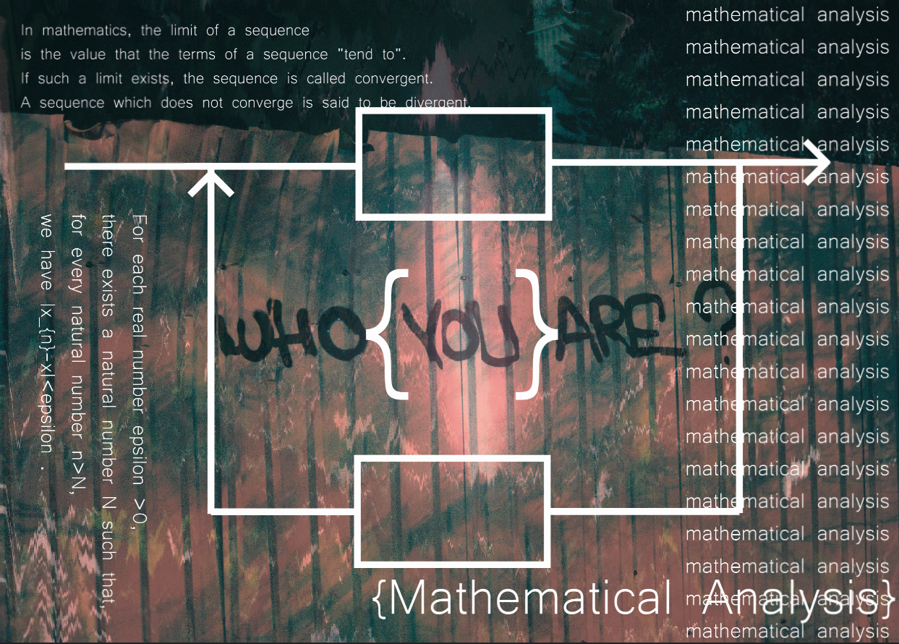
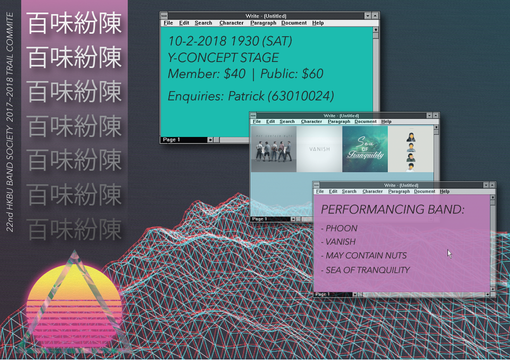
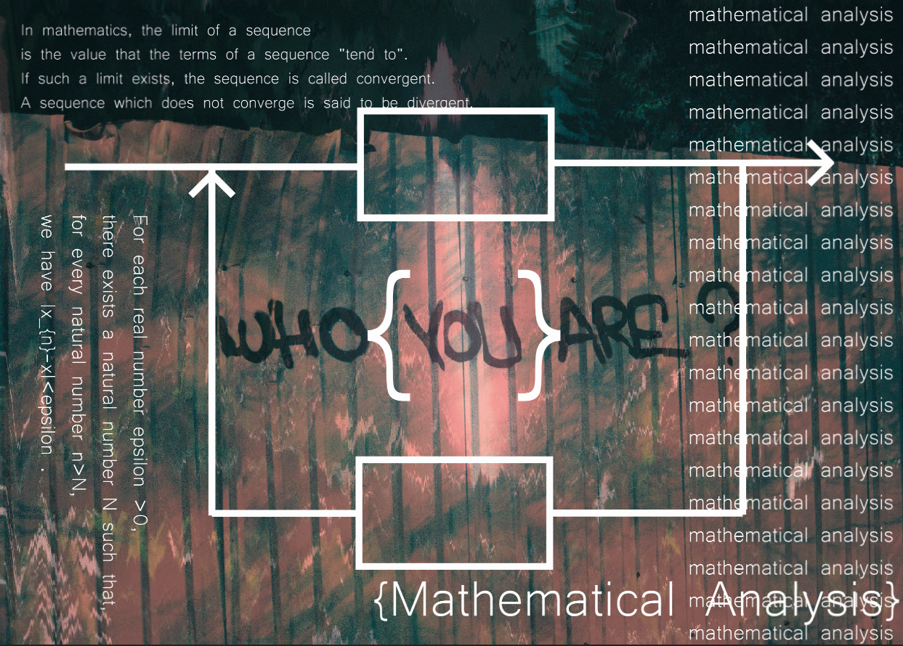
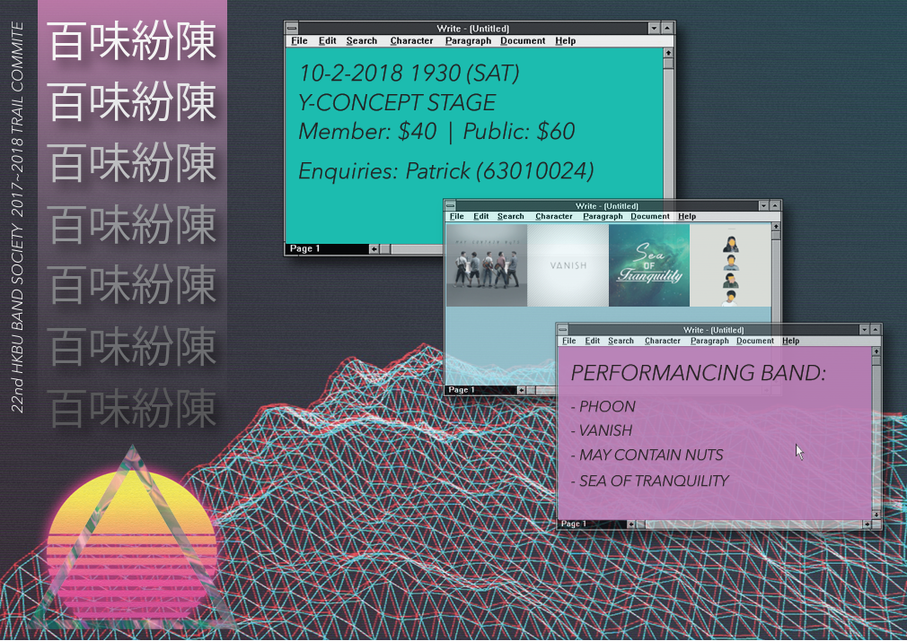

維吉爾曾提出，愛情，是愛情，推動著世界的發展。這句話把我們帶到了一個新的維度去思考這個問題。在人生的歷程中，趙必浩的出現是必然的。我們都知道，只要有意義，那麼就必須慎重考慮。蘇霍姆林斯基講過一段耐人尋思的話，只有能夠激發學生去進行自我教育的教育，才是真正的教育。這句話看似簡單，但其中的陰鬱不禁讓人深思。我想，把趙必浩的意義想清楚，對各位來說並不是一件壞事。了解清楚趙必浩到底是一種怎麼樣的存在，是解決一切問題的關鍵。這樣看來，這必定是個前衛大膽的想法。
_ 唬爛產生器
Project
-
Here is some coding ability test for some Job-interview. Those are related to data processing and analysis via python pandas.
covid19-Interactive-Infographic-Page
Here is the code I wrote for the covid19-Interactive-Infographic-Page. In order to get data from hkgov and do data clearing and transforming.
-
Here is the SQL code for my course - Data Management in Business. I am learning SQL now.
-
Here is the code for my math class. Included regression analysis, Numerical Methods etc.
-
Here is my final year project for my BSc math and stat. I use python NumPy and ThinkDSP to do FM sound synthesis.
-
Here is my python course assignment.
Design
I do design.
 



Media Art
I do art.